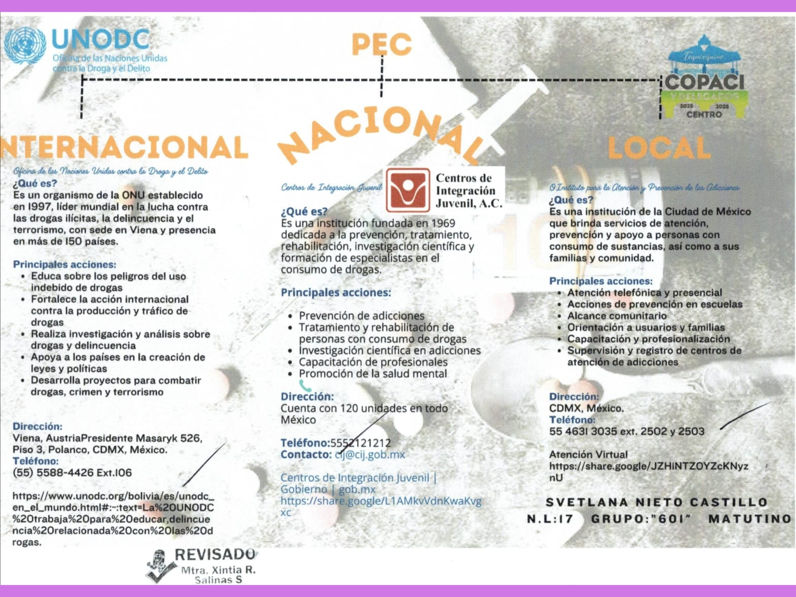

Decide tu futuro: Estás a tiempo
Las drogas son sustancias que afectan el cuerpo y la mente. Algunas pueden causar adicción y problemas de salud física y emocional.
Muchos jóvenes consumen drogas por curiosidad, presión social o problemas emocionales.
El consumo de drogas puede afectar la escuela, la familia y la salud mental.

En el primer parcial se investigaron instituciones y programas relacionados con la prevención de adicciones.
El objetivo fue conocer cómo ayudan a las personas y prevenir el consumo de drogas en jóvenes.
También se investigaron campañas y programas del gobierno para informar sobre las consecuencias del consumo de sustancias.
12 a 14 años
Algunos jóvenes comienzan por curiosidad.
15 a 17 años
Es la edad donde existe más presión social.
18 a 20 años
Existe más acceso a fiestas y alcohol.
Alcohol
Es una de las sustancias más consumidas.
Tabaco
Puede causar enfermedades respiratorias.
Vapeadores
Muchos creen que no hacen daño.
Drogas ilegales
Pueden afectar la salud física y mental.
En México se han realizado campañas para prevenir el consumo de drogas y ayudar a los jóvenes.
Gobierno de México:
https://www.gob.mx/salud/prensa/01-800-911-2000-para-atender-dudas-y-problemas-de-adiccionesIMSS:
https://www.imss.gob.mx/salud-en-linea/adiccionesSi una persona necesita ayuda por problemas de adicciones, existen líneas de apoyo y centros especializados.
Línea de la Vida: 800 911 2000
Atención gratuita las 24 horas.
AA Grupo Reflexión - Tequixquiac